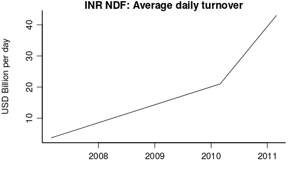
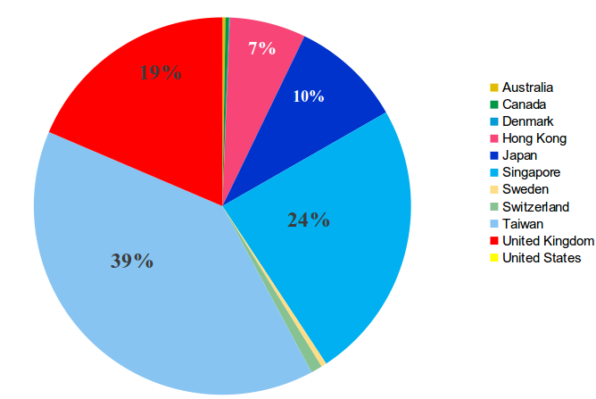

The taming of the rupee...
Financial Express, 12th July 2013
On July 8, 2013, the Reserve Bank of India (RBI) stopped all banks from carrying out any proprietary trades on currency derivatives exchanges. This means that all rupee transactions will have to be done only when a client approaches for selling or buying foreign exchange.
On the same day, Sebi doubled the margin requirements for forex trading, reduced client limits from the "higher" of 6% (of open interest) or $10 million to the lower of the two, reduced trading member limits from the higher of 15% or $50 million to the lower of the two.
While the RBI notification states "risk management" as the subject of the regulation, the Sebi circular mentions no reason for carrying out the measures.
Apart from these formal notifications, there have been some other eclectic interventions in the markets by RBI. State-run oil companies have been asked to meet their dollar requirements from a single bank (July 9). It seems banks were asked not to make predictions about the rupee in their forecasts to the public.
The harsh reality is that these actions will not help stem the fall of the rupee; in all probability, they make things worse. These arbitrary moves to curtail economic freedom will only worsen the panic and irrational sentiment in the country. As an example, the only country where economic policymakers interfere with freedom of speech is Argentina. It is not good for India to be one of those who curtain freedom of speech on economic issues.
  The rupee has become a big global market that is beyond the control of RBI and Sebi. Since 2007, the trade in non-deliverable forwards (NDFs) in the rupee has soared (see figure 1). These contracts are traded in London, Dubai and Singapore and many other locations. Since the rupee is a controlled currency, the settlement happens in foreign exchange. Indian policymakers have succeeded in crippling the growth of rupee trading in India, but they have no say in interfering with the global trading of the rupee. The overseas market has increasingly come to dominate the rupee (see figure 2).
What the RBI and Sebi moves have achieved is to reduce liquidity in the market. This will allow RBI's intervention to have an impact. But this impact is only in the short run. In the long run, trying to create walls between domestic and offshore derivatives markets for the rupee, or in squeezing the size of the market will have little impact on improving India's competitiveness. The lack of growth in productivity and high inflation will weaken the currency and will come back to haunt the economy.
These moves will, however, make the economy less resilient. RBI and Sebi are successful in reducing access to risk management for small companies in India. For any reasonable-sized organisation, the highway is open to take money out of the country and participate in the overseas market.
In the 1970s, Indira Gandhi's government used to think that food price inflation was caused by hoarding of food. Stringent actions were taken against speculators and hoarders. These made no difference to the supply and demand for food. We now recognise that such authoritarian actions are useless in obtaining cheaper food; the path to cheaper food lies in deeper initiatives that increase productivity in agriculture.
In a similar fashion, the government's assault on the rupee market is inspired by the idea of attacking market participants when the market price is considered undesirable. This will fail again. The price of the rupee is ultimately about supply and demand, and about India's prospects. It is convenient and fashionable for policymakers to blame market participants, but the deeper cause of the rupee's decline lies in the macroeconomic mismanagement including high inflation and large deficits. Until those fundamentals are addressed, the rupee will not improve.
The vast global market for the rupee will gladly lap up all the participants that are driven away from the market within India. RBI and Sebi can drive rupee trading out of the country; they cannot prevent it. Indian policymakers will ineffectually preside over an empty and irrelevant corner of the global market for the rupee. It is ironic that recent moves by RBI and Sebi will accentuate their irrelevance.
India has rapidly integrated with global markets. The rupee and the Nifty are signs of the performance of the economy. When economic policy goes astray-as it has in recent years-this will generate instant feedback with a drop in the rupee and Nifty. This is a healthy feedback loop. It immediately brings pressure upon the political authorities.
Emerging markets have understood these lessons. The economic policy apparatus of mature emerging markets knows that it is judged by domestic and global financial markets every day. This pressure has resulted in attempts at improving institutional structures. When bad things happen, the currency and equities are punished. The job of the government should be to try improving the policy frameworks. We, in India, have yet to come to the point where policymakers read these signals as weaknesses in the economy that they need to address.
Back up to Ila Patnaik's media page
Back up to Ila Patnaik's home page